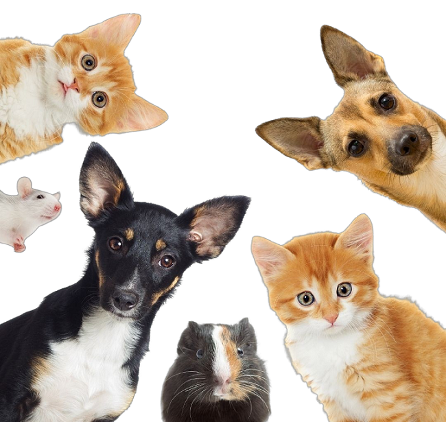

Bem-vindos a Pet Save
"Quem abandona não tem raça."
A Pet Save foi desenvolvida para denuncia de maus tratos de animais de estimação, entre eles: cães, gatos, peixes, aves e répteis.
De acordo com a OMS (Organização Mundial de Saúde) atualmente cerca de 30 milhões de cães e gatos vivem em situação de abandono no Brasil.
Nosso objetivo é que mais Pets encontre o seu lar e saia da situação de rua e maus tratos.
"Não sabemos nada sobre o amor se realmente nunca amamos um animal" Fred Wander.
Denuncie